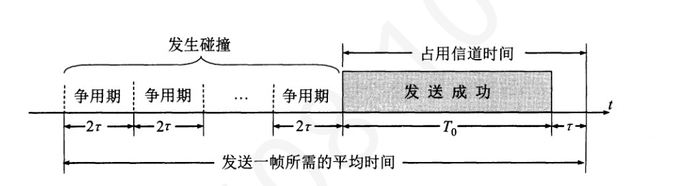

第 31 题
下列关于后退N 帧协议（GBN）的叙述中，错误的是（ ）。
- A．发送窗口大小必须小于序号空间大小
- B．接收方收到失序到达的无差错数据帧，会将其丢弃，并发送对期望序号前一帧的重复确认
- C．确认帧采用累积确认方式
- D．当发生超时时，发送方仅重传超时的那个数据帧
答案与解析
答案：D
当GBN 发送方发生超时时（通常是针对发送窗口内最早未被确认的帧），它会重传该帧以及在该帧之后已发送的所有帧（即发送窗口内所有已发送但未确认的帧）。
第 32 题
在选择重传协议（SR）中，如果帧序号采用3 比特编码，则接收窗口最大值为（ ）。
- A．3
- B．4
- C．7
- D．8
答案与解析
答案：B
SR 协议要求对于k 比特编码的系统，发送窗口、接收窗口之和不大于2𝑘。若接收窗口大于发送窗口，则没有意义，故发送窗口=接收窗口时，接收窗口取最大值，为4。
第 33 题
采用SR 协议，发送窗口和接收窗口大小均为W，帧序号采用3 比特。主机甲向乙发送数据。初始时，甲的发送窗口是[0,1,2,3]。甲发送了0、1 号帧，随后收到ACK1。然后甲发送了2、3 号帧。此时，甲的发送窗口内等待确认的帧集合是（）。
- A．{1, 2, 3}
- B．{2, 3}
- C．{0, 2, 3}
- D．{1, 2, 3, 4}
答案与解析
答案：C
自始至终甲的发送窗口未移动，发送窗口中0 号帧已发送未确认，1 号帧已发送已确认，2 号帧已发送未确认，3 号帧已发送未确认。因此，甲的发送窗口内等待确认的帧集合是{0, 2, 3}。
第 34 题
采用SR 协议，发送窗口和接收窗口大小均为W，帧序号采用3 比特。主机甲向乙发送数据。初始时，甲发送了0-3 号帧，其中0 号帧由于信道噪声丢失，其余帧均被乙收到。此时，乙接收窗口内帧序号为（）。
- A．{0,1,2,3}
- B．{1,2,3,4}
- C．{0,4,5,6}
- D．{0}
答案与解析
答案：A
SR 协议中，接收方可接收未按序到达但没有误码并且序号落入接收窗口内的数据分组，但只有在按序接收数据分组后，接收窗口才能向前滑动到相应位置。此外，SR 协议中，接收方的接收窗口长度不变且连续。
第 35 题
下列关于时分复用（TDM）的说法正确的是（ ）。
- A．共享信道的总带宽必须精确划分并分配给每个用户，且各用户带宽之和等于信道总带宽。
- B．共享信道的数据传输速率必须至少等于所有用户信号数据传输速率的总和。
- C．TDM 技术采用介质的位速率可以小于单个信号的位速率。
- D．每个用户在分配到的时间片内发送数据前，仍需通过载波侦听来避免与其他用户发生冲突。
答案与解析
答案：B
TDM 在发送端将不同用户的信号相互交织在不同的时间片内，沿同一个信道传输，在接收端再将各个时间片内的信号提取出来，还原成原始信号。为了实现TDM，必须满足如下条件：介质的位速率（即每秒传输的二进制位数）大于单个信号的位速率。介质的带宽（即所能传输信号的最高频率与最低频率之差）大于结合信号的带宽（即所有信号经过调制后形成的复合信号的带宽）。
第 36 题
关于统计时分复用（STDM）的特点，下列说法错误的是（ ）。
- A．STDM 帧中的时隙是按需动态分配的
- B．STDM 可以提高线路的利用率
- C．STDM 帧中的每个时隙需要包含用户的地址信息
- D．STDM 帧的长度通常是固定的，且时隙分配给每个用户的相对顺序不可变
答案与解析
答案：D
A.正确，这是STDM 与传统TDM 的主要区别之一，它根据用户的实际数据发送需求来分配时隙。B 正确，由于按需分配，避免了传统TDM 中固定分配时隙可能造成的浪费，因此能提高线路利用率。C 错误，正因为时隙是动态分配而不是固定分配给某个用户的，所以每个时隙（或时隙中的数据单元）必须包含某种形式的用户标识（如地址信息），以便接收端能够正确地将数据分发给目标用户。D 正确，STDM通常也会定义一个帧的结构，其总长度可能是固定的，但与TDM 不同的是，在这个帧内，时隙不是预先固定分配给特定用户的，而是根据当前哪些用户有数据发送来动态填充，因此用户占用时隙的顺序是可变的。
第 37 题
在设计信道复用系统时，为防止相邻用户信号间的潜在串扰，通常需要在分配的资源之间设置一定的保护间隔。下列哪种信道复用技术因为其信号隔离机制的特性，对这类因保护间隔而引入的频谱或时间效率损失最为敏感，且该间隔是其设计中不可或缺的物理隔离手段？
- A．码分复用（CDM）
- B．统计时分复用（STDM）
- C．同步时分复用（TDM）
- D．频分复用（FDM）
答案与解析
答案：D
FDM通过将总带宽划分为若干不重叠的子信道来区分用户。由于滤波器存在带通和带阻之间过渡带不够理想的物理特性，为防止一个信道中的信号泄露（串扰）到相邻信道，必须在子信道之间设置不分配给任何用户的保护频带。
第 38 题
在各种信道复用技术中，哪一种对时间同步的要求最为严格，需要所有设备都参照一个共同的 “帧”起点，并严格按照预先划分好的、极短的时间单位（时隙）来收发数据？
- A．WDM
- B．TDM
- C．CDM
- D．FDM
答案与解析
答案：B
TDM 将时间划分为一个个重复的帧，每个帧再划分为若干个时隙，并分配给不同的用户。所有用户必须共享同一个帧同步信号，并严格在自己被分配到的极短时隙内进行收发。若时间同步出现偏差，一个用户的数据就会发送到别人的时隙中，造成严重干扰。
第 39 题
在CDMA 中，假定S 站发送比特信息的数据率为b bps，S 站的码片宽度为m，那么S 站实际 ）bps。的数据率应该是（
- A．bm
- B．b/m
- C．b
- D．m/b
答案与解析
答案：A
在CDMA 中，每个比特信息都要编码成码片宽度的序列，所以要实现b bps 的比特信息数据率，应该要bm bps 的实际数据率。
第 40 题
站点A,B,C,D 通过CDMA 共享链路，A,B,C 的码片序列分别是（1,1,1,1）、（1, -1,1, -1）、 （1, 1, -1, -1），若信道上接收到的序列是（2,2,−2,2,0,0,0,−4,−2,2,2,2），则站点D 发送的数据是（ ）。
- A．001
- B．110
- C．100
- D．010
答案与解析
答案：C
借助不同站点码片彼此正交的性质（利用线代），求得D 的码片为（1，-1，-1, 1）。第一位数据：取接收序列的前4 位(2, 2, -2, 2)，与（1，-1，-1, 1）做内积运算再除以码片长度4，得到结果为+1，代表发送比特为1。同理，第二位数据为0，第三位数据为0。
第 41 题
若在CDMA 系统中，A 要通过基站跟B 通信，A,B 的码片序列分别是（1,1,1,1）、（1，- 1,1，-1），如果A 想给B 发送的一些数据中含一个比特信息“0”，那么A 发出的序列中比特“0”对 ），B 收到的序列该比特0 对应的序列是（ 应的序列是（）
- A．（1,1,1,1）、（-1，1，-1，1）
- B．（-1，-1，-1，-1）、（-1，1，-1，1）
- C．（1,1,1,1）、（1,1,1,1）
- D．（-1，-1，-1，1）、 （-1，-1，-1, -1）
答案与解析
答案：B
CDMA 系统的实际通信中，分为上行通信和下行通信两个部分，基站掌握所有主机的码片序列，但是每个主机只知道自己的码片序列。上行通信中，由主机给基站发送数据序列，如果想发送比特1，就发送自己的码片序列，想发送0，就发送码片序列的反码。基站收到多个主机发来的信号后，根据各主机的码片序列依次解析出收到的信息，并从信息中获取目的站，在下行通信中，根据目的站的码片序列来发送数据，目的站收到信息后，根据自己的码片序列来解析出比特信息。回到本题，由于发送比特0，所以应该发出的序列为A 的码片序列的反码，二进制0 一般由-1 表示，所以应该是（-1，-1，-1，-1）。基站收到后，解析出比特0，再根据B 的码片进行编码，B 收到的应该是B 的码片序列的反码（-1，1，-1，1）。本题选B。
第 42 题
关于纯ALOHA 协议与时隙ALOHA 协议的比较，下列说法错误的是（ ）。
- A．两者都属于随机访问协议
- B．时隙ALOHA 协议比纯ALOHA 协议具有更高的最大信道利用率
- C．纯ALOHA 协议不需要全局时间同步，而时隙ALOHA 协议需要
- D．纯ALOHA 协议发生冲突后不进行重传，而时隙ALOHA 协议会重传
答案与解析
答案：D
A 正确，纯ALOHA 和时隙ALOHA 都是随机访问控制协议，站点根据自身需求尝试发送。B 正确，时隙ALOHA 的最大信道利用率（约36.8%）高于纯ALOHA（约18.4%）。C 正确，纯ALOHA 允许站点随意发送，不需要同步；时隙ALOHA 则要求所有站点在统一的时隙边界发送，需要全局时间同步。D 错误，纯ALOHA 和时隙ALOHA 协议在检测到冲突（通常是发送后未收到确认）后，都会等待一个随机时间然后进行重传。如果都不重传，协议就无法工作。
第 43 题
在ALOHA 类型的协议中，发送方判断是否发生碰撞的主要依据是（ ）。
- A．接收到来自其他站点的NACK 信号
- B．监听到信道上出现干扰信号
- C．在预设的超时时间内未收到接收方的确认帧（ACK）
- D．物理层报告的载波丢失
答案与解析
答案：C
ALOHA 协议（包括纯ALOHA 和时隙ALOHA）本身不包含复杂的冲突检测机制（如CSMA/CD 中的边发边听）。发送方发送完一帧数据后，会启动一个计时器等待接收方返回的确认帧（ACK）。如果在预设的超时时间内未能收到ACK，发送方就假定其发送的帧发生了碰撞或丢失，并启动重传过程。
第 44 题
在CSMA（载波侦听多路访问）协议中，与1-坚持CSMA 相比，非坚持CSMA 的主要优点是 （）。
- A．减少了信道空闲时的等待时间
- B．减少了多个站点在信道变空闲后立即发送而导致的冲突概率
- C．信道利用率总是更高
- D．实现更简单
答案与解析
答案：B
非坚持CSMA 协议规定，如果信道忙，则放弃监听，等待一个随机时间后再重新监听。这与1-坚持CSMA（信道忙则持续监听，一旦空闲立即发送）相比，可以减少多个等待的站点在信道刚变空闲时同时发送数据而导致冲突的概率。但代价是可能增加了数据发送的平均延迟，因为站点在监听到信道忙后会等待一段时间而不是持续监听。
第 45 题
关于p-坚持CSMA 协议的特点，下列说法中错误的是（ ）。
- A．该协议旨在综合1-坚持CSMA 的低延迟特性和非坚持CSMA 的低冲突特性。
- B．参数p 的选择对协议性能有显著影响，p 值越小，站点发送前等待的平均时隙数越多。
- C．当监听到信道空闲时，站点以概率p 发送数据；若未发送，则以概率(1-p) 在当前时隙继续监听。
- D．若参数p 设置为1，则p-坚持CSMA 协议的行为特性基本等同于1-坚持CSMA 协议。
答案与解析
答案：C
p-坚持CSMA 协议通常用于时隙信道。其工作原理是若监听到信道忙，则持续监听到信道空闲；一旦信道空闲则以概率p发送数据，以概率(1-p)推迟到下一个时隙。在下一个时隙，如果信道仍然空闲，则重复步骤。
第 46 题
下列关于CSMA/CD 协议的说法中，错误的是（ ）。
- A．站点在发送数据帧的整个过程中，会持续对信道进行监听，以便能够及时检测到可能发生的碰撞。
- B．当一个站点检测到碰撞发生时，它会立即停止发送数据，并发送一个特殊的信号以确保所有其他冲突站点都能感知到此次碰撞。
- C．为了解决碰撞后的信道争用问题，发生碰撞的站点在尝试重传前，会各自执行一个二进制指数退避算法来随机推迟发送时间。
- D．一旦一个站点开始发送数据帧的第一个比特，它就不再需要进行碰撞检测了，因为信道已被成功占用。
答案与解析
答案：D
碰撞检测必须在站点发送帧的整个过程中持续进行，至少要持续到一个争用期 （2τ，两倍端到端传播时延）的时间。这是因为，如果站点A 开始发送，在信号传播到网络最远端的站点B 之前，站点B 也可能开始发送，从而引发碰撞。这个碰撞信号需要时间传播回站点A。如果站点A 在碰撞信号到达前就停止了发送和检测（例如帧太短或检测时间不够），它可能会误认为发送成功。因此，即使开始发送，也必须持续检测直到可以确认没有碰撞发生。
第 47 题
使用CSMA/CD 协议的以太网中，站点（ ）进行全双工通信，（）进行半双工通信。
- A．可以，不可以
- B．可以，可以
- C．不可以，不可以
- D．不可以，可以
答案与解析
答案：D
CSMA/CD协议应用于半双工通信，在使用CSMA/CD 协议时，一个站点不可能同时进行发送和接收，也就不可以进行全双工通信，因此答案为D。
第 48 题
主机A 和主机B 分别位于某个总线型以太网的两端，它们之间信号的单程传播时延记为𝜏。假设A 和B 发送数据过程中，其他主机不发送数据。若A 和B 发送数据时发生冲突，则从开始发送数据时刻起，到A 和B 均检测到冲突时刻止，所需的最短时间和最长时间分别是（ ）
- A．0.5𝜏，𝜏
- B．0.5𝜏，2𝜏
- C．𝜏，1.5𝜏
- D．𝜏，2𝜏
答案与解析
答案：D
最短时间𝜏：A 和B 同时发送，信号在中点碰撞，冲突信号传回两端。总时间= 走一半路程(𝜏/2)+返回一半路程(𝜏/2) =𝜏；最长时间2𝜏：A 先发，在信号即将到达B 时B 才发。冲突发生在B 端，A 检测到冲突需要一个来回的总时间。总时间= A 的信号传到B(𝜏) +冲突信号传回A(𝜏) = 2𝜏。
第 49 题
假设一个采用CSMA/CD 协议的100Mbps 局域网，最小帧长为128B，则在一个冲突域内两个站点之间的传播延时最多是（）。
- A．5.12μs
- B．10.24μs
- C．20.48μs
- D．40.96μs
答案与解析
答案：A
最小帧长为128B，则帧的发送时延为𝑇𝐷= 128 ∗8𝑏/100𝑀𝑏/𝑠= 10.24𝜇𝑠。在一个冲突域内两个站点之间的单向传播时延最多为𝑇𝐷/2 = 5.12𝜇𝑠。
第 50 题
某局域网采用CSMA/CD 协议，主机A 和主机B 的距离为1km，传播速率为2 ∗105km/s。t=0时，A 发送了数据帧，在A 数据发送完毕前，B 也发送了数据帧，A、B 检测到碰撞的时间相差3μs，则B 发送数据的时间和A, B 发送的数据发生碰撞的时间为（ ）
- A．4μs, 5μs
- B．4μs, 5.5μs
- C．3μs, 4μs
- D．3μs, 3.5μs
答案与解析
答案：C
1km/2 ∗105km/s=5μs，由题易知，B 在5μs 时检测到碰撞，A、B 检测碰撞的时间相差3μs，那么A在8μs检测到碰撞。从而可推B在3μs时发送数据帧。B发送时，A已经传了3μs，还剩2μs，相向而行，易知在4μs 时碰撞，因此答案为C。
第 51 题
一个采用CSMA/CD 协议的局域网，数据传输速率为100Mb/s，最小帧长为64 字节。若信号在介质中的传播速度为200 米/μs，则该网络允许的两个最远站点之间的物理距离是多少？
- A．200 米
- B．256 米
- C．512 米
- D．1024 米
答案与解析
答案：C
为了确保发送方在发送完一帧前能检测到可能发生的冲突，要求帧的发送时延不能小于信号在网络中往返传播时延的两倍。即最小帧长/数据传输速率=2*最大单向传播时延=2*最远物理距离/介质传播速度。数据传输速率为100Mb/s，最小帧长为64B，介质传播速度为200m/μs，代入可得最大物理距离为512m。
第 52 题
在一个CSMA/CD 网络中，若保持其数据传输速率R 和信号传播速度V 不变，仅将其允许的最大距离d 减小为原来的一半，则为了维持协议的有效性，其最小帧长应如何调整？
- A．减小为原来的一半
- B．保持不变
- C．增加为原来的两倍
- D．减小为原来的四分之一
答案与解析
答案：A
最小帧长𝐿𝑚𝑖𝑛/数据传输速率（R）=2*最大单向传播时延，即𝐿𝑚𝑖𝑛= 2𝑅∗𝑑/𝑉，数据传输速率R 和信号传播速度V 保持不变，则2R/V 为常数，最小帧长𝐿𝑚𝑖𝑛与最大距离d 成正比，则最大距离d 减小为原来的一半时，最小帧长也应当减少为原来的一半。
第 53 题
在某个100BASE-T 以太网中，主机A 与主机B 之间经过一个集线器相连，若集线器处理信号会产生1.56μs 的单向延时，信号在线缆中的传播速率为200 000 000m/s。则主机A 与B 之间理论上可以相距的最远距离是（）。
- A．100m
- B．156m
- C．128m
- D．200m
答案与解析
答案：D
100BASE-T 以太网的争用窗口为5.12μs，即可允许的往返传播时延为5.12μs，单向传播时延为2.56μs，再减去集线器处理消耗时间，剩下1μs 为信号可在通信链路上传播时间，乘以传播速率可得最远距离为200m。
第 54 题
已知10BaseT 以太网的争用时间片为50μs。若网卡在发送某帧时发生了连续11 次冲突和16 次冲突时，则分别应该如何处理（）。
- A．最多等待51150μs 后重传；放弃发送该帧，并向上层报告错误。
- B．最多等待102350μs 后重传；放弃发送该帧，并向上层报告错误。
- C．放弃发送该帧，并向上层报告错误；仅放弃发送该帧。
- D．放弃发送该帧，并向上层报告错误；放弃发送该帧，并向上层报告错误。
答案与解析
答案：A
对于连续11 次冲突，根据退避算法，第n 次重传的退避时间是从[0,2𝑘−1]中随机选择一个数r，退避时间为r*争用时间片，其中k = min(n, 10)。对于第11 次重传，n=11，所以k = min(11, 10) = 10。随机数r 的取值范围是[0,2𝑘−1] = [0, 1023]。因此，最大退避时间为1023 * 50μs = 51150μs。由于冲突次数11 小于16 次的最大重传限制，所以网卡在等待后会进行重传。对于连续16 次冲突，以太网标准规定，如果一帧连续冲突16 次（1 次初始发送+ 15 次重传），则认为网络拥塞严重或出现故障，发送方将放弃发送该帧，并向上层报告错误。A 选项正确。
第 55 题
在CSMA/CD 的局域网中，假设所有帧发送需要的时间是𝑇0，端到端单程的时延为𝜏，那么该信道的最大利用率为（） 𝑇0𝑇0𝑇0𝑇0
- A．
- B．
- C．
- D．𝑇0+𝜏𝑇0+2𝜏2𝑇0+𝜏2𝑇0+2𝜏
答案与解析
答案：A
下图是以信道被占用的情况，当没有发生碰撞的时候，信道的利用率最大。 CSMA/CD 是半双工，所以同一时间只有单向的数据传输，且没有确认机制，在帧全部发送出去前没有检测冲突，就默认本次数据传输没有发生冲突。所以成功发送完一个帧的总信道占用时间是𝑇0 + 𝜏，故数据传输时间𝑇0信道利用率为𝑇0+𝜏。总信道占用时间= 𝜏补充：以太网通常有一个参数𝛼=𝑇0，代入信道利用率的公式，可以得到极限信道利用率𝑆𝑚𝑎𝑥= 11+𝛼。 𝛼越小，即争用期（2𝜏）与数据传输时间占比越小，即只要一碰撞，就可以立即检测出来，资源被浪费的时间就非常少。

第 56 题
下列介质访问控制方法中，可能发生冲突的是
- A．CDMA
- B．CSMA/CA
- C．FDMA
- D．TDMA
答案与解析
答案：B
CSMA/CA（载波侦听多路访问/冲突避免）是一种随机访问介质访问控制协议，主要用于无线局域网。在这种协议中，所有用户共享同一个信道并进行争用。虽然协议名称中包含“冲突避免”，但它并不能完全消除冲突，例如“隐藏站”问题就会导致冲突。它通过一系列机制（如随机退避、RTS/CTS）来尽量降低冲突发生的概率，但冲突仍然是可能发生的，故B 正确。CDMA（码分多址）、FDMA（频分多址）、TDMA（时分多址）都属于信道划分介质访问控制方法。这类方法通过将资源（码道、频率、时间）预先分配给各个用户，使得不同用户在通信时使用相互隔离的资源，因此从根本上避免了冲突的发生。
第 57 题
下列选项中，对正确接收到的数据帧进行确认的MAC 协议是（ ）
- A．CSMA
- B．CDMA
- C．CSMA/CD
- D．CSMA/CA
答案与解析
答案：D
CSMA/CA 是无线局域网标准802.11 中的协议，它在CSMA 的基础上增加了冲突避免的功能，ACK 帧是CSMA/CA 避免冲突的机制之一。
第 58 题
在使用CSMA/CA 协议的IEEE 802.11 无线局域网中，当一个站点有数据帧要发送，并且它通过载波侦听检测到信道空闲时，它不会立即发送数据。它首先会等待一个特定的帧间间隔。如果在此间隔后信道仍然空闲，它会进入退避过程。这个特定的帧间间隔是？
- A．SIFS
- B．PIFS
- C．DIFS
- D．EIFS
答案与解析
答案：C
在IEEE 802.11 无线局域网中，当一个站点有新的数据帧要发送时，它首先会侦听信道。如果信道被检测为忙，则站点必须推迟发送。如果信道被检测为空闲，站点并不会立即发送，而是需要等待一段称为DIFS 的时间。如果在DIFS 间隔后信道仍然保持空闲，站点才会开始随机退避过程，并在退避计时器减到0时发送数据帧（或RTS帧）。SIFS用于高优先级传输，如ACK或CTS。PIFS 用于PCF 模式下的优先接入。EIFS 用于检测到错误帧后的等待。
第 59 题
在IEEE 802.11 无线局域网中，为了解决“隐藏终端”问题并减少长数据帧因碰撞而完全重传的开销，引入了RTS/CTS 机制。当站点A 要向站点B 发送一个较长的数据帧时，它会首先发送一个RTS 帧。周围能听到RTS 帧的站点，包括目的站点B，会如何利用RTS 帧中的信息？
- A．仅目的站点B 响应CTS，其他站点在收到RTS 后等待DIFS
- B．目的站点B 响应CTS，其他能听到RTS 的站点根据RTS 中的持续时间字段设置自己的NAV，并在NAV 期间避免发送
- C．所有能听到RTS 的站点都响应一个CTS，以确认信道已被预约
- D．目的站点B 响应CTS，其他站点忽略RTS 帧，仅当它们收到CTS 帧时才设置NAV
答案与解析
答案：B
发送方A 发送一个RTS (Request to Send)帧，该帧中包含一个持续时间字段。这个时间包含了后续的CTS、数据帧(Data)以及确认帧(ACK)所需的总时间。目的方B收到RTS后，回复一个CTS 帧，CTS帧中也包含了根据RTS计算出的剩余持续时间。其他站点会解析帧中的持续时间字段，并将该值设置到自己的网络分配向量(NAV)计时器中。
第 60 题
关于NAV，下列说法错误的是？
- A．NAV 是一种虚拟载波侦听机制，用于指示介质被占用的预期时间。
- B．当RTS/CTS 帧中声明的持续时间值大于站点自身的NAV 值，站点将更新自己的NAV。
- C．当一个站点的NAV 值大于0 时，即使物理载波侦听显示介质空闲，它也必须推迟发送。
- D．一个站点自身的NAV 计时器会随时间递减，当NAV 为0 时，如果物理信道也空闲，则可以尝试接入信道。
答案与解析
答案：B
网络分配向量是IEEE 802.11 MAC层协议中实现虚拟载波侦听的关键机制。它是一个计时器，用于记录信道被其他站点预约的剩余时间。一个站点收到一个带有持续时间字段的帧时，它会检查该帧中的持续时间值。如果该值大于其当前NAV 计时器的值，站点就会用这个更大的值来更新自己的NAV。如果收到的持续时间值小于当前的NAV，则忽略该值，保持NAV 不变。当NAV为0 时，即使物理信道也空闲，也需要等待一个DIFS 和随机退避时间再发送。